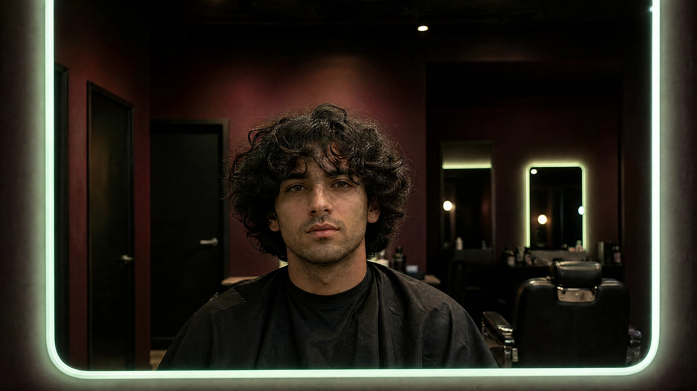
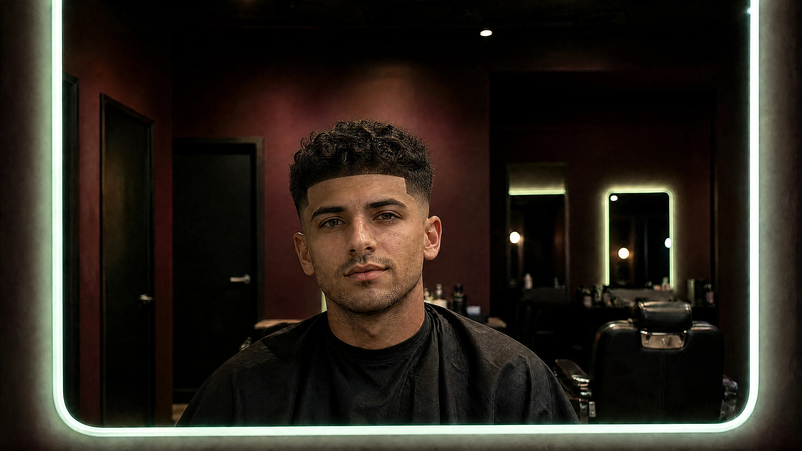
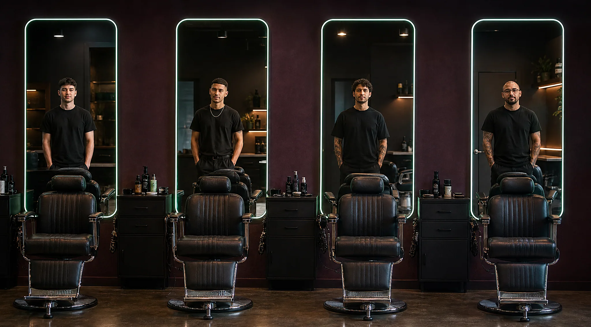
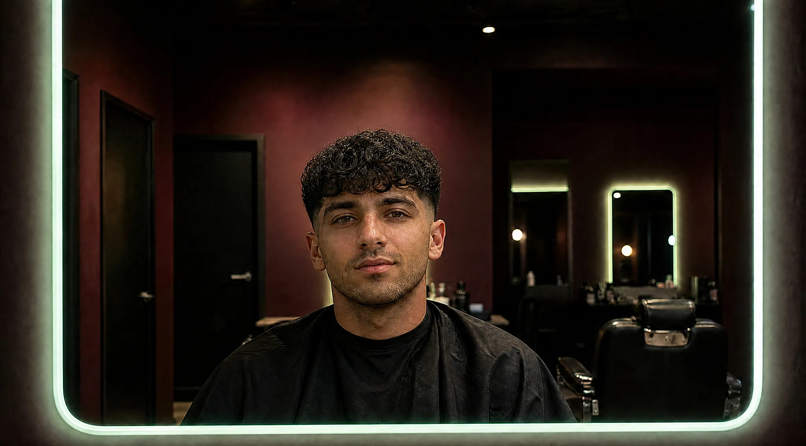
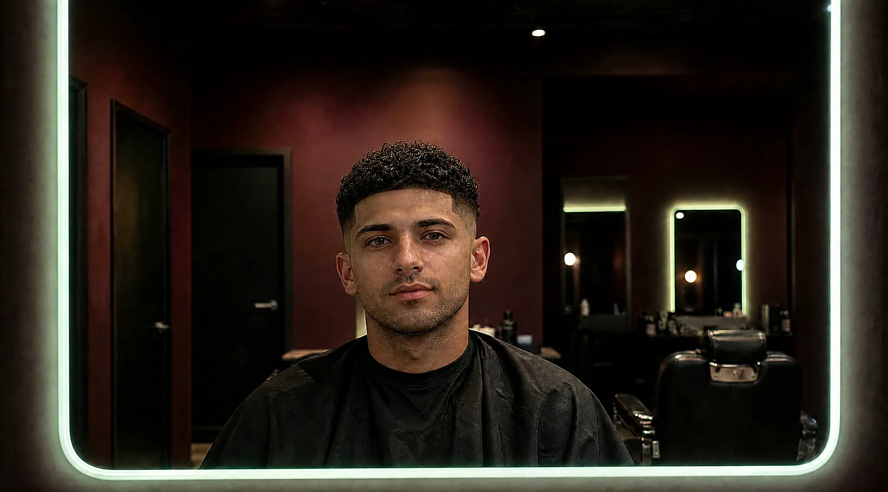
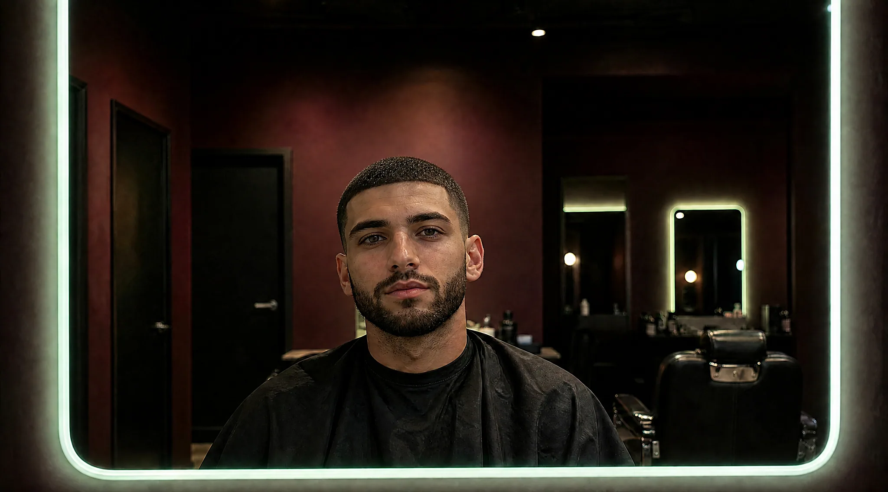
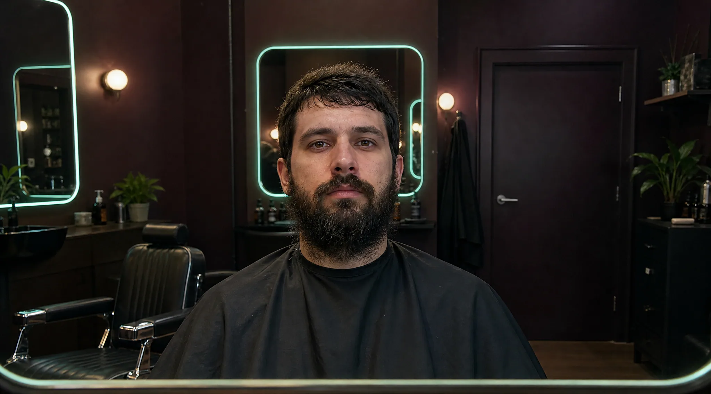
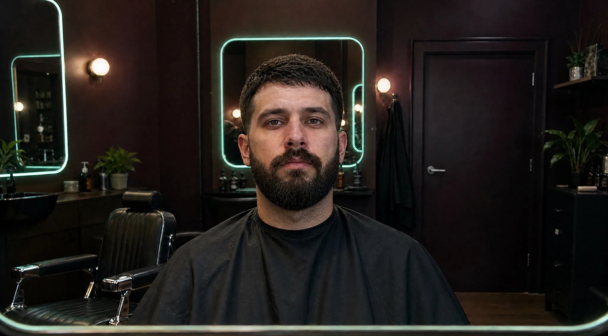

Wisch
drüber.
Links rein, rechts raus. Zieh die Linie über den Spiegel und sieh, was 45 Minuten bei uns ausmachen.


Wen willst du?
Vier Barber, vier Spiegel. Tipp auf einen: Er ist im Termin vorgewählt.


45 Minuten.
Ein Zug.



Low, Mid oder High?
Derselbe Kopf, vier Schnitte. Tipp durch und such dir deine Höhe aus, bevor du dich setzt.
Auf Schläfenhöhe. Der Klassiker, sichtbar, aber nicht laut.
Alles über den FadeAuch hier: wisch drüber.
Länge, Wangenlinie, Hals. Der Bart bekommt dieselbe Kante wie der Fade.
Bart & Kontur

Dein Stuhl.
Deine Zeit.
Kein Anruf, während die Maschine läuft. Barber und Zeit wählen, fertig.
Lücke frei: heute 16:30Jemand hat abgesagt. Auf der Warteliste bekommst du so etwas per SMS.
Beispiel – im echten Betrieb live aus dem Kalender.

Wie immer?
Skin Fade bei Milan, nächster freier Termin.
1 · Leistung
2 · Barber
3 · Tag & Zeit
Demo: Zeiten sind Beispiele, es wird nichts gebucht.
Was wir machen.
Mit Dauer. Den Preis siehst du beim Buchen, bevor du bestätigst.
Haare
| Haarschnitt | 45 Min. |
| Skin Fade | 45 Min. |
| Buzz Cut | 20 Min. |
| Jungs bis 14 | 30 Min. |
Bart
| Bart in Form | 30 Min. |
| Haare & Bart | 60 Min. |
| Bart färben | 20 Min. |
Kontur
| Line-up | 15 Min. |
| Nacken frei | 10 Min. |
| Augenbrauen | 10 Min. |

Wir suchen Azubis und Barber. Eigener Stuhl, Stammkunden ab Tag eins, Akademie-Abend jeden Mittwoch.
Alles zur AkademieBewerben in 60 Sekunden
Danke.
Demo: Es wurde nichts gesendet. Im echten Betrieb meldet sich Ben innerhalb von 48 Stunden.
Friseursalons in Deutschland Ende 2025 – 245 weniger als im Jahr davor.
neue Ausbildungsverträge Friseur/-in 2025, bundesweit.
Friseur-Azubis in NRW seit 2014. Wer jetzt lernt, wird gebraucht.
Quellen: Zentralverband des Deutschen Friseurhandwerks, PM 06/2026 (Salons; Ausbildungsverträge nach BIBB); Bezirksregierung Arnsberg. Stand 11/2026.
Was Kunden sagen könnten.
„Seit einem Jahr derselbe Barber, derselbe Schnitt. Ein Tipp und gebucht.“
Beispiel · noch keine echte Bewertung„Vorher im Spiegel gezeigt, wie hoch der Fade geht. Genau so ist er geworden.“
Beispiel · noch keine echte Bewertung„Lücke um 16:30 per SMS bekommen, um 17:15 saß der Fade.“
Beispiel · noch keine echte BewertungDieser Musterbetrieb hat noch keine echten Bewertungen. Im echten Betrieb stehen hier Google-Note, Anzahl und Stand.